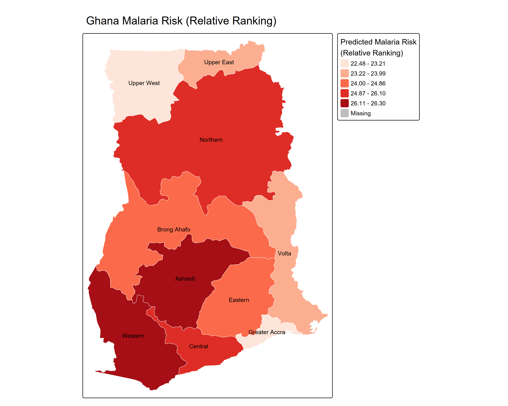

Malaria Risk Prediction - Ghana
Public HealthAdvanced geospatial epidemiological pipeline integrating climatic variables, population density and historical incidence data to map and forecast malaria outbreak probability across Ghanaian districts.
Python
ARC GIS
GeoPandas
R
Completed: 2025